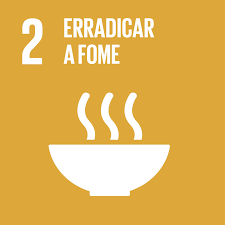
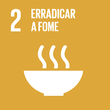
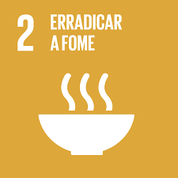
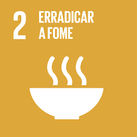

As ODS que serão desenvolvidos no meu trabalho são a (Erradicação da fome) número 2 da tabela e a número 9 (Inovação e infraestrutura).
Objetivos 3.1 Geral Evitar o desperdício de alimentos, tendo como destino o alimento que sobraria a uma pessoa que necessita. Tendo um aplicativo com as duas funções distribuir esse alimento que sobra, e vender comida e restaurantes que se cadastrarem 3.2 Específicos - Desenvolver um aplicativo para permitir o compartilhamento de alimentos; - Disponibilizar geladeiras comunitárias, com acesso via biometria; - Estabelecer parceria com o poder público (prefeitura); - Tendo um lado comercial, vendendo para pessoas no geral; - Tendo um lado social, doação para pessoas carentes;
Como podemos ajudar pessoas com pouco acesso a alimentos e acesso às refeições diárias?
Se implementarmos um sistema que integra um aplicativo para o compartilhamento de alimentos, geladeiras comunitárias com acesso via biometria, parcerias com o poder público e uma abordagem dual de venda comercial e doação social de alimentos excedentes, então poderemos aumentar significativamente o acesso das pessoas em condições precárias a refeições diárias, enquanto simultaneamente reduzimos o desperdício de alimentos e promovemos a inovação e infraestrutura, contribuindo assim para a consecução dos Objetivos de Desenvolvimento Sustentável (ODS) número 2 (Erradicação da fome) e número 9 (Inovação e infraestrutura).